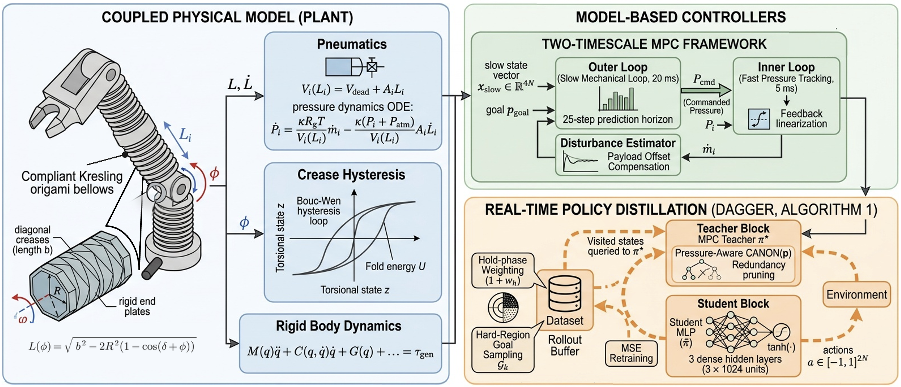
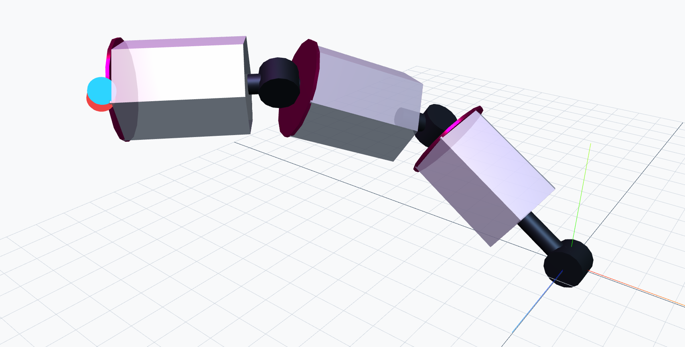

The problem
Each motor joint and pneumatic segment influences the others. Treating them as independent control loops hides that coupling, while planning with the full dynamics makes model-predictive control expensive.

Model and control
The model carries six states per segment, including chamber pressure and crease hysteresis. Comparing PID, LQR and MPC shows that coupled control helps most on strongly coupled joints; the nearly decoupled pitch joint remains competitive with PID. Behavior cloning followed by DAgger transfers the MPC teacher’s decisions into a compact neural policy.
Findings
The coupled controllers track 2.5× tighter than the decoupled baseline at lower torque. The distilled policies achieve roughly 93–94% settled success in the reported two- and three-segment evaluations, with no collisions observed in those evaluation runs. Success requires remaining within 10 mm of the goal for 20 steps. Pressure-aware goal selection also addresses a high-pressure limit cycle that restricts the teacher’s usable workspace.
Scope
These are simulation results, not a hardware demonstration or a collision-safety guarantee. Performance depends on the tested goal distribution and model; the reported mass-mismatch robustness evaluation is for the two-segment arm.